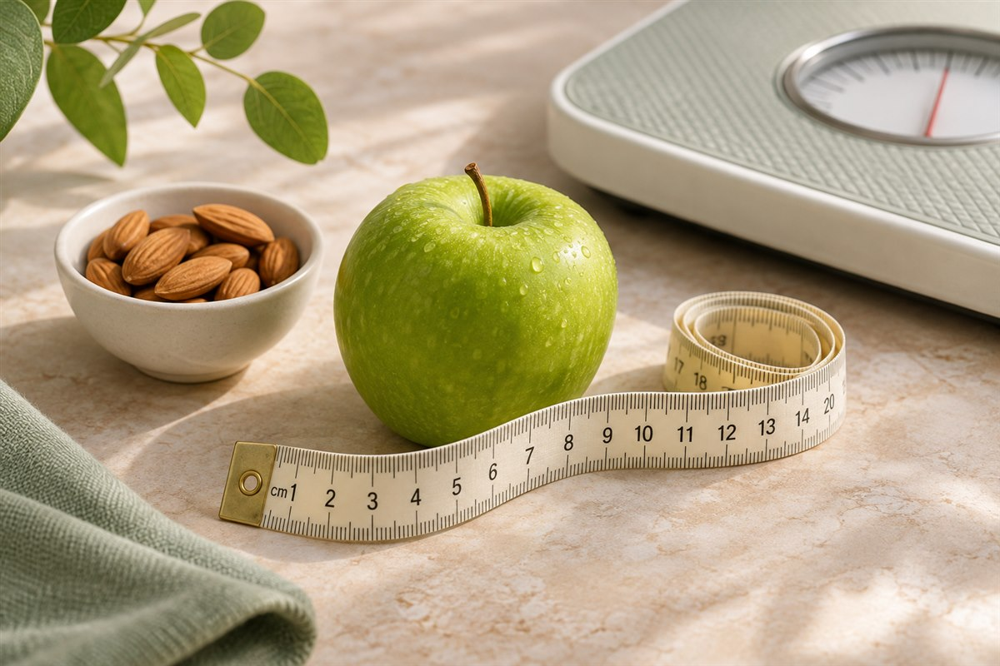
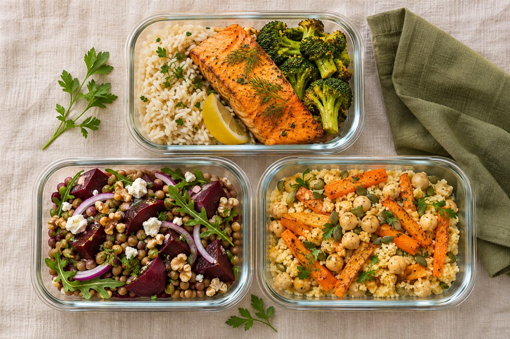

Kontakt
Zadzwoń lub napisz. Opowiedz o swoich potrzebach i wybierz dogodny termin spotkania.
Twoje potrzeby. Twój rytm dnia. Wsparcie dietetyka klinicznego w budowaniu codziennych nawyków żywieniowych.
 Małe kroki
Małe krokiWybierz wsparcie dopasowane do Twoich potrzeb.
Wspólnie znajdziemy sposób na dobre odżywianie w Twojej codzienności.
Pierwsza wizyta i konsultacje kontrolne dla dorosłych i dzieci. Ocena odżywienia i analiza składu ciała w gabinecie w Łodzi.
Poznaj szczegółyWsparcie przy nadwadze i otyłości. Indywidualny plan, praca nad nawykami i utrzymaniem efektów.
Poznaj szczegóły
Żywienie w chorobach dietozależnych — m.in. cukrzycy, insulinooporności i chorobach tarczycy.
Poznaj szczegółyJadłospisy dla dorosłych i dzieci, dopasowane do zdrowia, ulubionych smaków i celu współpracy.
Poznaj szczegóły
Kontakt z dietetykiem także wtedy, gdy nie możesz odwiedzić gabinetu.
Poznaj szczegółyPraktyczna edukacja żywieniowa i stopniowa zmiana przyzwyczajeń. Wsparcie dla Ciebie i Twojej rodziny.
Poznaj szczegółyW poradni także: analiza składu ciała i stanu odżywienia, żywienie dzieci oraz warsztaty dietetyczne.
 Poznajmy się
Poznajmy sięMagister dietetyki · Dietetyk ogólny i kliniczny · Doradca żywieniowy
Ukończyłam studia I i II stopnia z dietetyki na Wydziale Nauk o Zdrowiu Uniwersytetu Medycznego w Łodzi. Od 13 lat prowadzę pacjentów, łącząc wiedzę kliniczną z uważnym, indywidualnym podejściem. Doświadczenie zdobywałam również podczas praktyk z żywienia człowieka i żywienia klinicznego, a wiedzę rozwijam na konferencjach dietetycznych.
Wspieram dorosłych i dzieci w redukcji, zwiększeniu lub utrzymaniu masy ciała oraz w żywieniu przy chorobach dietozależnych. Zalecenia i jadłospisy dopasowuję do zdrowia, preferencji i rytmu dnia. Wyjaśniam je prostym językiem, pomagam budować dobre nawyki i motywuję do kolejnych kroków.
Najlepszym potwierdzeniem mojego podejścia są opinie pacjentów — 100% poleceń.
Zadzwoń lub napisz. Opowiedz o swoich potrzebach i wybierz dogodny termin spotkania.
Porozmawiaj z dietetykiem o swoich potrzebach i możliwościach współpracy.
Ustal z Karoliną indywidualny plan dalszej współpracy.
„Sympatyczna atmosfera, łatwe i smaczne przepisy, polecam ❤️”
„Polecam z całego serca Panią Dietetyk. Profesjonalne podejście do pacjenta, pełen profesjonalizm i przede wszystkim troska 😍”
„Bardzo polecam Panią Karolinę. Posiłki są naprawdę smaczne, a Pani Karolina jest bardzo miłą i cierpliwą osobą. Jestem bardzo zadowolona ze współpracy.”
Wybrane fragmenty publicznych rekomendacji z Facebooka
Zobacz wszystkie opinie„Z całego serca polecam panią Karoliną – jestem bardzo zadowolona z naszej współpracy, jej ogromnej wiedzy oraz cudownej atmosfery podczas każdej wizyty.”
„Podchodzi indywidualnie do pacjenta z dozą wyrozumiałości, ale i wymaga dyscypliny w procesie co bardzo motywuje do działania.”
„Pani Karolina to bardzo sympatyczna osoba, z ogromną wiedzą, przekazująca ją w sposób zrozumiały i przystępny, aby wyniki całego procesu były trwałe.”
Fragmenty publicznych opinii z Google · Daty i oceny według Google, stan na 9 listopada 2026
Zobacz wszystkie opinie w GooglePoniedziałek–piątek · 8:00–20:00
Po wcześniejszym umówieniu wizyty.

Wybierz temat i zostaw kontakt do siebie. Wyślij wiadomość bezpośrednio do poradni.
Wolisz zadzwonić? 501 092 308Zadzwoń pod numer +48 501 092 308 lub napisz e-mail. Termin zostanie ustalony bezpośrednio z poradnią.
O aktualny cennik i zakres współpracy zapytaj przez e-mail lub telefonicznie.
Tak. Skontaktuj się z poradnią, aby ustalić termin oraz sposób połączenia.